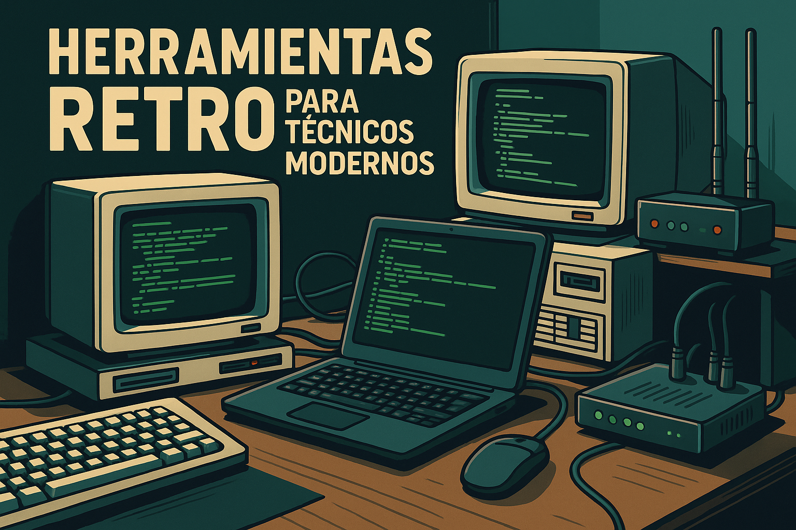

🖥️ Herramientas retro para técnicos modernos
¿Recuerdas la estética de los antiguos terminales verdes sobre negro? Hoy vuelve con fuerza, no solo por nostalgia, sino por eficiencia y simplicidad.
🎯 ¿Por qué retro?
Las interfaces retro cargan rápido, son minimalistas y se enfocan en lo importante. Ideales para técnicos que valoran la funcionalidad pura.
🛠️ Herramientas útiles con estilo clásico
Con estas herramientas tendrás velocidad, utilidad y estética vintage en un solo lugar.